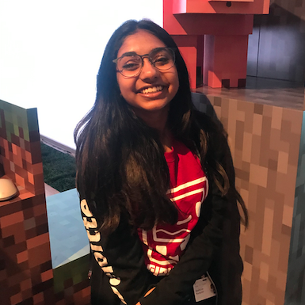

Mathurah Ravigulan 💻


Hey! I'm Mathurah. I'm a Systems Design Engineering student at the University of Waterloo from Toronto, ON. I'm interested in the intersection of tech, entrepreneurship, human systems, and data.
This fall I'm heading to Shopify as a UX development intern.
I'm open for Summer 2021 internships in Product Management. Shoot me a message if you're interested in collaborating: mathurah.ravigulan@gmail.com
I love bringing ideas to life through design thinking, collaborating with others at hackathons, and advocating for digital literacy.
I dabble in a little bit of everything: web-development, design, ux/ui design, writing, photography, entrepreneurship, and leadership. All and all, I love tech, and most specifically, how it can positively change our lives and make the world a better place. Things are changing every day and I want to be on the forefront of it. I'm forever curious and always learning no matter what.
I was named a Generation Google Scholar, have done development at Deloitte & the Royal Bank of Canada, Product Design at a startup, Blockchain Markets (now acquired by Bit.buy) and did UX research on content development at Canada Learning Code to make workshops more engaging for teens.
I also co-founded and was the Chief Product Officer of myCryptoHippo, a cryptocurrency education platform that makes blockchain more accessible by allowing students to learn how to trade using virtual dollars. As head of product, I managed a team of 40 and allowed our team to win pitch competitions internationally.
When I'm not designing, writing, or working on a new idea, you can find me playing on the ukulele, teaching kids how to code at Canada Learning Code & Girls Make Games, chasing after other people's dogs, or re-reading the Harry Potter series.
Excited to expand my skills and provide value in any way!
📌 What I'm doing now
Starting my 1B term of Systems Design Engineering 📖Courses I'm taking:
- Data Structures and Algorithms (C++)
- Human Factors of Design
- Microeconomics
- Digital Systems (Circuits)
- Linear Algebra
- Calculus
A fun hobby I started to stay connected with some of close friends in Systems Design Engineering at the University of Waterloo. I remember most of our deep insights about life coming from our late talks on residence. Now our school is online, we still want to keep that conversation, and share it with others. Thought it would be a nice keepsake to look back on! Check it out - For Context:
🤗 Say hi!
I tweet things a lot: @mathurahravi
Send me an email 💌: mathurah.ravigulan@gmail.com
LinkedIn: Mathurah Ravigulan